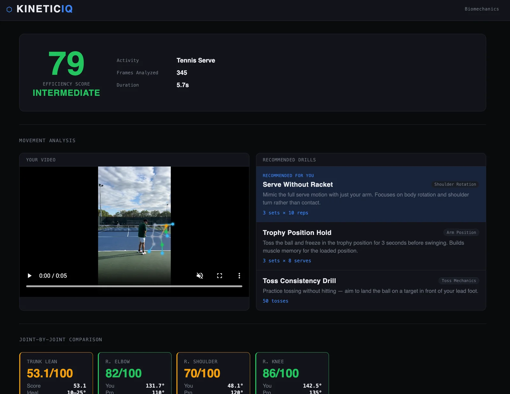
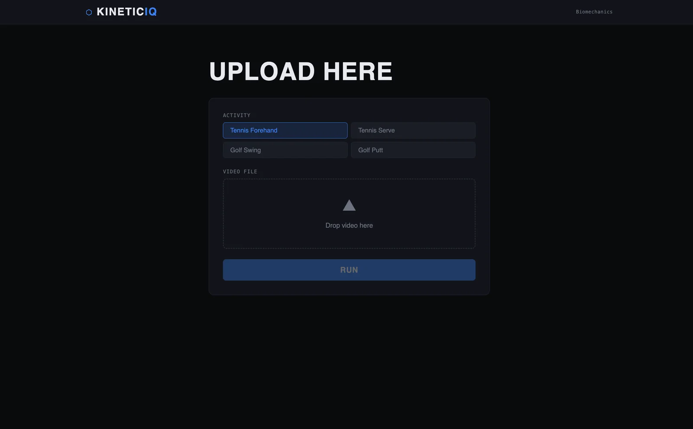

COMPUTER VISION · SPORT · 2026–
KinetIQ
An AI-assisted swing analyzer that tracks body and racket motion from video, then turns it into timing and consistency feedback for players and coaches. Submitted to the 2026 Congressional App Challenge.
What I built
- An upload screen for four activities: tennis forehand, tennis serve, golf swing, and golf putt.
- Pose tracking drawn over the player's own video, so they can see what the analysis saw.
- An efficiency score with a skill level, plus how many frames were analyzed.
- A joint-by-joint comparison (trunk lean, elbow, shoulder, knee) that puts the player's angle next to a pro reference.
- Recommended drills with sets and reps, with the top one marked for the player.
How it works
- 1Upload a video and pick the activity
- 2Track the body's joints frame by frame
- 3Measure the key joint angles
- 4Compare them with a pro reference
- 5Show a score, joint feedback, and drills
Screens


Tools
- Computer vision
- Biomechanics
- Data viz
Status
- Submitted to the 2026 Congressional App Challenge.